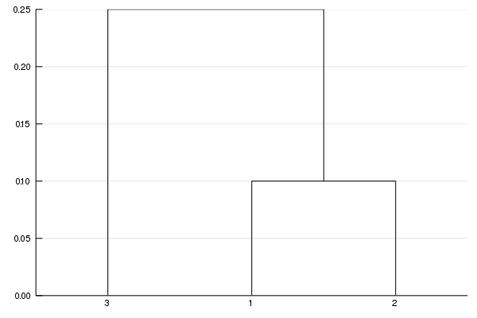

Working with Distances / Dissimilarity
Quite often, it's useful to boil stuff down to distances between samples. AbundanceTables can be used with the pairwise() function from Distances.jl to get a symetric distance matrix.
using Distances
using Microbiome
abund = abundancetable([1 3 0;
4 8 3;
5 0 4]);
dm = pairwise(BrayCurtis(), abund, dims=2)To plot this, use the MDS or PCA implementations from MultivariateStats [1] and plotting functionality from StatsPlots[2].
using MultivariateStats
using StatsPlots
mds = fit(MDS, dm, distances=true)
plot(mds)
savefig("mds.png"); nothing # hide
Optimal Leaf Ordering
I also wrote a plotting recipe for making treeplots for Hclust objects from the Clustering.jl package, and the recipe for plotting was moved into StatsPlots:
using Clustering
dm = [0. .1 .2
.1 0. .15
.2 .15 0.];
h = hclust(dm, linkage=:single);
plot(h)
Note that even though this is a valid tree, the leaf a is closer to leaf c, despite the fact that c is more similar to b than to a. This can be fixed with a method derived from the paper:
Bar-Joseph et. al. "Fast optimal leaf ordering for hierarchical clustering." Bioinformatics. (2001)[3]
h2 = hclust(dm, linkage=:single, branchorder=:optimal);
plot(h2)
savefig("hclustplot2.png"); nothing # hide
Requires https://github.com/JuliaStats/MultivariateStats.jl/pull/85
Requires https://github.com/JuliaPlots/StatsPlots.jl/pull/152
Requires https://github.com/JuliaStats/Clustering.jl/pull/170